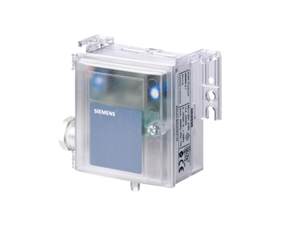

QBM系列
Siemens QBM系列压差传感器技术参数如下：
输出：0~10V, 量程：-50~50Pa/-100~100Pa/0~100Pa；工作电压：13.5~33Vdc；
输出：0~10V, 量程：0~200Pa/0~250Pa/0~500Pa；工作电压：13.5~33Vdc；
输出：0~10V, 量程：0~1000Pa/0~1500Pa/0~3000Pa；工作电压：13.5~33Vdc；
输出：4~20mA, 量程：-50~50Pa/-100~100Pa/0~100Pa；工作电压：13.5~33Vdc；
输出：4~20mA, 量程：0~200Pa/0~250Pa/0~500Pa；工作电压：13.5~33Vdc；
输出：4~20mA, 量程：0~1000Pa/0~1500Pa/0~3000Pa；工作电压：13.5~33Vdc；
输出：0~10V, 量程：0~100Pa；工作电压：24Vac/13.5~33Vdc；
输出：0~10V, 量程：-50~50Pa；工作电压：24Vac/13.5~33Vdc；
输出：0~10V, 量程：0~100Pa；LCD显示；工作电压：24Vac/13.5~33Vdc；
输出：0~10V, 量程：0~300Pa；工作电压：24Vac/13.5~33Vdc；
输出：0~10V, 量程：0~300Pa；LCD显示；工作电压：24Vac/13.5~33Vdc；
输出：0~10V, 量程：0~500Pa；工作电压：24Vac/13.5~33Vdc；
输出：0~10V, 量程：0~500Pa；LCD显示；工作电压：24Vac/13.5~33Vdc；
输出：0~10V, 量程：0~1000Pa；工作电压：24Vac/13.5~33Vdc；
输出：0~10V, 量程：0~1000Pa；LCD显示；工作电压：24Vac/13.5~33Vdc；
输出：0~10V, 量程：0~2500Pa；工作电压：24Vac/13.5~33Vdc；
输出：0~10V, 量程：0~2500Pa；LCD显示；工作电压：24Vac/13.5~33Vdc；
输出：4~20mA, 量程：0~100Pa；工作电压：13.5~33Vdc；
输出：4~20mA, 量程：0~100Pa；LCD显示；工作电压：13.5~33Vdc；
输出：4~20mA, 量程：0~300Pa；工作电压：8~33Vdc；
输出：4~20mA, 量程：0~300Pa；LCD显示；工作电压：8~33Vdc；
输出：4~20mA, 量程：0~500Pa；工作电压：8~33Vdc；
输出：4~20mA, 量程：0~500Pa；LCD显示；工作电压：8~33Vdc；
输出：4~20mA, 量程：-50~50Pa；工作电压：8~33Vdc；
输出：4~20mA, 量程：-50~50Pa；LCD显示；工作电压：8~33Vdc；
输出：4~20mA, 量程：0~500Pa；工作电压：8~33Vdc；
输出：4~20mA, 量程：0~1000Pa；工作电压：8~33Vdc；
输出：4~20mA, 量程：0~1000Pa；LCD显示；工作电压：8~33Vdc；
输出：4~20mA, 量程：0~2500Pa；工作电压：8~33Vdc；
输出：4~20mA, 量程：0~2500Pa；LCD显示；工作电压：8~33Vdc；
输出：0~10V, 量程：0~300Pa；工作电压：13.5~33Vdc/24Vac；